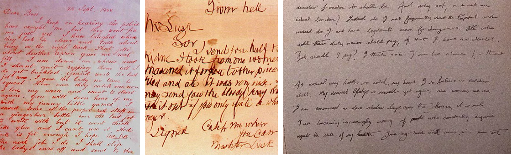
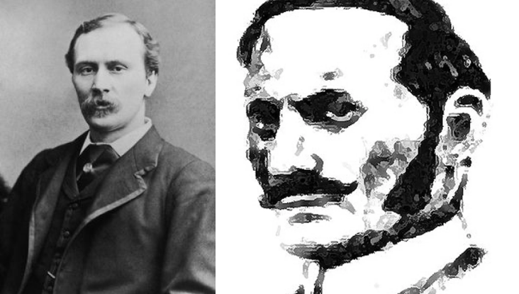

Jack lo squartatore (Jack the ripper in inglese) è l'appellativo dato a uno sconosciuto serial killer che agì tra l'estate e l'autunno del 1888 nel degradato quartiere londinese di Whitechapel, nell'East End di Londra. Il nome è tratto dalla firma in calce del serial killer in una lettera pubblicata nel periodo delle uccisioni e indirizzata alla Central News Agency da un soggetto anonimo che asseriva di essere l'assassino.
Le cinque vittime accertate
Gli attacchi attribuiti a Jack lo squartatore riguardavano esclusivamente vittime femminili, scelte tra le prostitute dei bassifondi di Whitechapel, le quali venivano uccise tramite sgozzamento, e in seguito il killer infieriva sui corpi mutilandoli e asportandone gli organi interni.

Foto delle vittime in vita
• Mary Ann Nichols, 43 anni
Il corpo di Mary Ann Nichols fu scoperto intorno alle 3:45 del mattino di venerdì 31 agosto 1888 a Buck's Row (ora Durward Street), di fronte a uno dei tanti mattatoi di Whitechapel. Secondo gli ufficiali di Scotland Yard, Nichols era stata vista per l'ultima volta circa un'ora prima da una certa Emily Holland, con la quale aveva precedentemente condiviso un letto in una casa comune al 18 di Spitalfields, nel borough di Tower Hamlets.
La vittima presentava la gola recisa da due profondi tagli, uno dei quali fin quasi alla decapitazione, poiché esso aveva attraversato completamente tutto il tessuto fino alle vertebre, e decine di fendenti al ventre, da cui fuoriusciva in parte l'intestino. La sua vagina era stata pugnalata più volte, mentre anche molte altre lesioni da taglio ai lati dell'addome, probabilmente inferte di punta con una spinta verso il basso, erano state causate dallo stesso coltello.
• Annie Chapman, 47 anni
Seconda vittima ufficiale, sabato 8 settembre 1888 il corpo di Annie Chapman fu scoperto intorno alle 6 del mattino vicino ai gradini dell'ingresso del cortile sul retro di 29 Hanbury Street a Whitechapel. Il cadavere presentava la gola squarciata e la testa quasi del tutto recisa dal busto, il ventre era aperto: gli intestini erano appoggiati sulla spalla destra, mentre la vagina, l'utero e due terzi della vescica erano stati asportati; peraltro, ai piedi della vittima furono rinvenute alcune monete e un pezzo di lettera insanguinata datata 20 agosto.
L'assassino rimaneva ignoto e la polizia non aveva alcun sospettato: supponeva che fosse un pazzo fanatico o un maniaco sessuale con alcune discrete conoscenze di anatomia.
• Elizabeth Stride, 44 anni
Il suo cadavere fu rinvenuto da un cocchiere il 30 settembre intorno all'una di notte all'interno di un portone di Berner Street, presso il cortile di un circolo di ebrei e tedeschi. Presentava solo un profondo taglio alla gola, dal quale fuoriusciva ancora molto sangue, come dichiarò il cocchiere. La polizia ne concluse che l'arrivo di quest'ultimo avesse disturbato l'assassino, che non ebbe modo di infierire sulla donna completando il suo macabro rituale.
• Catherine Eddowes, 46 anni
Il suo corpo fu ritrovato lo stesso 30 settembre in Mitre Square in un lago di sangue e in posizione supina, come tutte le altre vittime. La donna era stata sottoposta a un vero e proprio martirio dall'assassino, che non essendo riuscito a infierire sulla vittima precedente avrebbe cercato una seconda vittima su cui accanirsi. Il volto era completamente sfigurato e irriconoscibile se non per il colore degli occhi. Naso e lobo dell'orecchio sinistro erano stati asportati, così come la palpebra dell'occhio destro, solcata da profondi tagli.
Il volto era sfigurato con un taglio a "V" sulla parte destra e con numerosi tagli sulle labbra, tanto profondi da mostrare le gengive. Il corpo era sventrato da un enorme e unico taglio verticale che dall'inguine arrivava fino alla gola: lo stomaco e gli intestini erano stati estratti e appoggiati sulla spalla destra, il fegato appariva tagliuzzato, il rene sinistro e gli organi genitali erano stati portati via. La vittima era stata come di consueto sgozzata quasi fino alla decapitazione, vennero rinvenute tracce di sperma.
• Mary Jane Kelly, 25 anni
Mary Jane Kelly è l'ultima vittima attribuita a Jack lo squartatore. Il suo corpo fu scoperto il 9 novembre 1888 poco dopo le 10:45. Giaceva sul letto della camera dove la donna viveva in affitto al numero 13 di Miller's Court, vicino a Spitalfields Market. La gola era squarciata, il viso gravemente mutilato e irriconoscibile, il petto e l'addome aperti, i seni furono asportati e molti organi interni erano stati rimossi, il fegato giaceva tra le gambe e l'intestino era arrotolato sulle mani, il suo utero, i reni e un seno erano posizionati sotto la sua testa, i muscoli che ricoprivano gli arti erano stati asportati, il cuore non fu trovato.

Foto dei cadaveri ritrovati
Profilo criminale
Su incarico degli investigatori il dottor Thomas Bond cercò di redigere un profilo della personalità criminale di Jack lo squartatore. In qualità di medico forense assistette all'autopsia di Mary Jane Kelly, ultima delle cinque vittime canoniche. Nelle sue note, datate 10 novembre 1888, attribuì natura sessuale agli omicidi, pur senza violenza sessuale, associata a elementi collerici e di apparente misoginia.
La profilazione evidenziava come gli omicidi fossero stati commessi da un solo individuo maschio fisicamente prestante, audace e imperturbabile al tempo stesso. Lo sconosciuto sarebbe apparso innocuo, forse un uomo di mezza età e ben vestito, probabilmente con un mantello, per nascondere i sanguinosi effetti dei suoi attacchi. Ipotizzò anche che il soggetto soffrisse di una condizione chiamata satiriasi, una devianza sessuale oggi identificata come ipersessualità o promiscuità, ma che non possedesse alcuna conoscenza anatomica.
Profilo moderno dell'FBI
I moderni profiler dell'FBI hanno realizzato il seguente profilo: « [...] individuo maschio bianco, di età compresa fra i 28 e i 36 anni, con un'infanzia caratterizzata da una figura paterna assente o passiva. L'omicida probabilmente viveva o lavorava nell'area di Whitechapel ed esercitava una professione in cui poteva legalmente soddisfare le sue tendenze distruttive ma comunque di modesta estrazione sociale, probabilmente era l'assistente di un medico o forse esercitava un lavoro umile come il macellaio o l'artigiano.
L'omicida molto probabilmente aveva un qualche difetto fisico o forse era afflitto da qualche grave malattia, entrambi condizioni che potrebbero aver causato in lui una grande frustrazione o rabbia».
Teorie sull'identità dell'assassino
La concentrazione degli omicidi durante i fine settimana e le zone in cui ha colpito l'assassino, a pochi isolati di distanza l'una dall'altra, hanno fatto facilmente concludere che lo squartatore avesse un impiego regolare nel quartiere. Altri hanno sospettato che l'assassino fosse un uomo di alta classe borghese, forse un medico, o un aristocratico, che si era stabilito nel quartiere di Whitechapel alla ricerca di una zona più adatta dove compiere i suoi crimini.
Agli inizi degli anni novanta del XX secolo fu rinvenuto e pubblicato un presunto diario di Jack lo squartatore. Inizialmente ritenuto un sicuro falso, fu rivalutato dal documentarista della BBC Paul H. Feldman. Nel suo libro The Final Chapter (1998), resoconto dell'indagine triennale condotta sul diario dal suo gruppo di studiosi, Feldman identifica Jack lo squartatore con James Maybrick, un commerciante di cotone di Liverpool, che figurava tra gli indiziati, poi ucciso dalla moglie Florence.
Nel 2014 alcuni giornali hanno riportato che dalla comparazione del DNA ricavato dal sangue rappreso su una sciarpa trovata vicino alla quarta vittima (Catherine Eddowes) e i discendenti dei sospettati si era arrivati a identificare con certezza l'assassino in un barbiere ebreo-polacco di nome Aaron Kosminsky. L'uomo ha trascorso la parte finale della sua vita in un manicomio a causa della sua schizofrenia ed è morto nel 1919 per una gangrena alla gamba.
Tuttavia la comparazione non è stata ritenuta attendibile o incontrovertibile come inizialmente affermato a causa di alcuni errori durante la procedura di analisi genetica dei campioni estratti dalla sciarpa e pertanto l'identità dell'assassino di Whitechapel rimane ancora avvolta nel mistero.

Diario rinvenuto di Jack Lo Squartatore

James Maybrick, sospettato
Aaron Kosminsky, sospettato